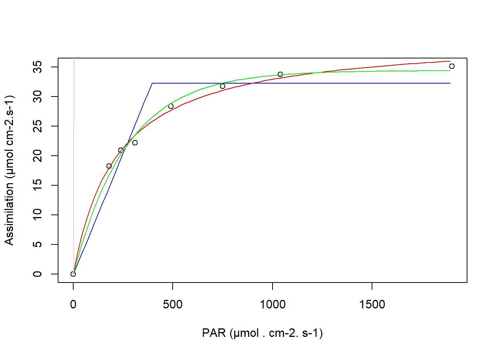

PhotosynthesisLight
General equation form
A general function for the gross photosynthesis rate per Unit Leaf Area as a function of light intensity can be written as:
\[{P_g}={P_{g,\max }}\cdot f\left( x \right) \tag{1}\]
where Pg = Gross Photosynthesis rate Pg,max = light saturated photosynthesis rate=f(CO2, Temp., N, ..) f(x) = response function (0..1)
If dark respiration Rd is added (substracted) on get’s the net photosynthesis rate:
\[P_n~={P_{g,\max }}\cdot f\left( x \right)-R_d \tag{2}\]
where Pn = Net Photosynthesis rate [µmol CO2 m-2 s-1] Pg = Gross Photosynthesis rate Pg,max = light saturated photosynthesis rate=f(CO2, Temp., N, ..) f(x) = response function (0..1) Rd = dark respiration rate [µmol CO2 m-2 s-1]
Blackman-Response-Curve
The most simple response function thereby is the so called Blackman reponse curve. It is the most simple way to predict the co-limitation of photosynthesis by light energy at the one hand and CO2-diffusion into the leaves.
\[\begin{align} & P_n=\left( \begin{matrix} \alpha I-R_d \\ {{P}_{\max }-R_d} \\ \end{matrix}for\,\begin{matrix} I\le {{I}_{crit}} \\ I>{{I}_{crit}} \\ \end{matrix} \right. \\ & \\ & {{I}_{crit}}={}^{{{P}_{\max }}}/{}_{\alpha };\,\,\,\,{{\left. \frac{dP}{dI} \right|}_{I<{{I}_{crit}}}}=\alpha \\ \end{align} \tag{3}\]
where
I = photosynthetic photon flux density, PPFD (µmol photons m-2. s-1) \(alpha\) = quantum yield, initial slope (µmol CO2 µmol-1 photons) Pn, (Pmax) = (light saturated) CO2-assimilation rate (µmol CO2 m-2 s-1)
The parameters of the function are easily interpreted but this function form is seldom used for the description of gas exchange data as it describes real data sets not very well.
Rectangular hyperbola
A bit more realistic approach to describe the light response curve of single leaves is the so called rectangular hyperbola:
\[P_n=\frac{\alpha I {{P}_{\max }}}{\alpha I +{{P}_{\max }}}-R_d \tag{4}\]
one should notice that the parameter alpha now describes the light use efficiency at the start of the curve (zero radiation):
\[{{\left. \frac{dP}{I} \right|}_{I=0}}=\alpha \tag{5}\]
and therefore has a somewhat different meaning as in the Blackman-Response curve.
This equation is analogous to the well known Michaelis-Menten equation often used in enzyme kinetics. It sometimes fails to describe data sets perfectly as photosynthesis often is light saturated earlier than the smooth shape of this curve predicts. A main advantage of this curve is the possibility to integrate it analytically over entire canopy assuming either a constant or a declining value of Pmax. It can be combined with a respiration term (@fig-RectHyperbolicPhotosynthesis, [@loomis1992])
The light saturated maximum photosynthesis rate Pmax is given if only CO2 diffusion into the leaf mesophyll or the leaf chloroplast is limiting photosynthesis. It may be therefore be decoupled into the leaf conductance for CO2, gs and the concentration difference between the air outside the leaves and the leaf interior:
\[P_{max}=g_s\Delta CO_2 \tag{6}\]
where \(\Delta CO_2\) is the difference between the ambient CO2 concentration and the CO2 concentration in the leaf interior. The equation can be rewritten to give a more general form of the rectangular hyperbola: This lead to the following equation:
\[P_{n}^{{}}=\frac{\alpha \,I\,{{g}_{s}}\Delta C}{\alpha \,I+{{g}_{s}}\,\Delta C}-R_d \tag{7}\]
where \(\Delta C\) is the difference between the ambient CO2 concentration and the CO2 concentration in the leaf interior. This equation can be used to describe the light response of photosynthesis in a more general way. It can be used to describe the effect of changing \(CO_2\)-concentrations on photosynthesis. The equation can be rewritten to give a more general form of the rectangular hyperbola:
which can be used to describe effects of changing \(CO_2\)-concentrations on photosynthesis is a very simple manner.
Non rectangular hyperbola
More flexible than the rectangular hyperbola is the non-rectangular hyperbola, which includes an additional parameter \(\Theta\) giving more flexibility in smoothing measured data:
\[{{P}^{2}}\Theta -P(\alpha I +{{P}_{\max }})+\alpha I {{P}_{\max }}=0 \tag{8}\]
This quadratic equation has two solutions from which only the second with a negative sign before the square root is physiological meaningful:
\[{{P}_{1,2}}=\frac{(\alpha I +{{P}_{\max }})\pm \sqrt{{{(\alpha I +{{P}_{\max }})}^{2}}-4\Theta \alpha I {{P}_{\max }}}}{2\Theta } \tag{9}\]
Another option to describe the light response of single leaves is the negative exponential function:
\[P_n=P_{max} \left( 1-e^{\frac {\alpha I}{P_{max}}} \right ) \tag{10}\]
This approach is similar to the non-rectangular hyperbola for values 0.7<theta<0.9. It is/has been use for instance in the well known SUCROS approach of modeling canopy photosynthesis.
Fitting curves to experimental data
In the following section data from an publication on photosynthesis measurements on cauliflower () are used to show options for analysing the data with different empirical models of photosynthesis. Therefore R code is used and presented in this document.
Definition of R functions
In order to fit the different response function we first define theme as R functions:
Default parameter definitions
For the use and fitting of the functions different parameters with their respective values have to be defined:
# Definition of a sequence of radiation intensities [µmol/cm2/s]
I <- seq(0, 2000, 10)
# Two versions of light saturated photosynthesis rate either in [µg*m-2*s-1] or [µmol*m2-*s-1]
Pmax_g <- 1642 # [µg*m-2*s-1]
Pmax_m <- Pmax_g/(12+2*16) #[µmol*m2-*s-1]
# Two versions of initial light use efficiency
alpha_Jg <- 34.9 # [µg*J-1]
alpha_mol_mol <- alpha_Jg/4.57*1/44 # 0.06 more common
# Values of dark respiraton rate
r_g <- 135 # [µg*m-2*s-1]
## converstion to molar units using the respective molecular weights
r_mol <- r_g/(12+2*16) #[µmol*m2-*s-1]Example plot
Using the rectangular hyperbola and the parameter values defined a simple plot with base r can be produced:
Pbrutto <- RectHyp(Pmax_m, alpha_mol_mol, I)
plot(I,Pbrutto)Data
The data are read in csv-format and we use alternatively units of mol and g within the following sections as the publication of [@kage2001] uses weight units and radiation intensity in W.m-2 as it typical for many crop growth models. Alternatively, molar units for radiation (µmol Photons.cm-2.s-1) and CO2-exchange (µmol CO2.cm-2.s-1) are most often used in crop physiology publications.
#### read in data ###########
# read data from Kage & Stützel ()
dat <- read.csv("Cauliflower_Photo_HH_1995_06_01.csv", header = TRUE , sep = ";")
# correct for chamber size
dat$Assi = dat$Assi*3.1/2.5
# convert assimilation rate into units of g CO2
dat$assi_g = dat$Assi*44
dat$par_w = dat$PAR/4.55The data set consists of the columns: Plot, Sample, Date, Time, CO2, DiffCO2, PAR, Assi, IntCO2, assi_g, par_w. The units for the numerical columns are:
Parameters <- c( "CO2", "DiffCO2", "PAR", "Assi", "IntCO2", "assi_g", "par_w")
Units <- c("[ppm]", "[ppm]", "[µmol Photons.cm-2.s-1]", "[µmol CO2.cm-2.s-1]", "[ppm]",
"[µg CO2.cm-2.s-1]", "[W.cm-2]")
tmp <- dat %>%
dplyr::select(Parameters)
tmp <- as.data.frame(apply(tmp,2,summary))
#tmp <- tmp %>% tidyr::pivot_wider()
minval <- unname(unlist(as.vector(tmp[1,])))
maxval <- unname(unlist(as.vector(tmp[6,])))
df.def <- data.frame(Parameters, Units=Units, min=minval, max=maxval)
num_digits <- 3
# Format numeric columns using dplyr
df.def <- df.def %>%
mutate(across(where(is.numeric), ~ signif(.x, digits = num_digits)))knitr::kable(df.def)| Parameters | Units | min | max |
|---|---|---|---|
| CO2 | [ppm] | 119.00 | 707.0 |
| DiffCO2 | [ppm] | -116.00 | 10.8 |
| PAR | [µmol Photons.cm-2.s-1] | 0.00 | 1900.0 |
| Assi | [µmol CO2.cm-2.s-1] | -5.58 | 57.8 |
| IntCO2 | [ppm] | 91.00 | 705.0 |
| assi_g | [µg CO2.cm-2.s-1] | -246.00 | 2540.0 |
| par_w | [W.cm-2] | 0.00 | 418.0 |
This means that the columns assi_g and par_w are giving the assimilation rate and the radiation intensity in units of weight and energy.
library(dplyr)
# Define the number of significant digits
num_digits <- 3
# Format numeric columns using dplyr
df <- dat %>%
mutate(across(where(is.numeric), ~ signif(.x, digits = num_digits)))# make nice table using kable
knitr::kable(head(df))| Plot | Sample | Date | Time | CO2 | DiffCO2 | PAR | Assi | IntCO2 | assi_g | par_w |
|---|---|---|---|---|---|---|---|---|---|---|
| 9 | 2 | 02. Jun | 08:41 | 145 | -28.0 | 1040 | 14.00 | 104 | 617 | 229.0 |
| 9 | 3 | 02. Jun | 08:42 | 139 | -25.0 | 750 | 12.30 | 102 | 540 | 165.0 |
| 9 | 4 | 02. Jun | 08:44 | 126 | -23.8 | 490 | 11.80 | 91 | 518 | 108.0 |
| 9 | 5 | 02. Jun | 08:45 | 124 | -19.1 | 310 | 9.55 | 96 | 420 | 68.1 |
| 9 | 6 | 02. Jun | 08:45 | 122 | -18.1 | 240 | 8.80 | 96 | 387 | 52.7 |
| 9 | 7 | 02. Jun | 08:46 | 121 | -16.3 | 180 | 8.06 | 97 | 355 | 39.6 |
Photosynthesis data from Kage & Stützel (2001)
From this data set we filter out the observations using recent level of CO2 concentration at approximately 400 ppm and make a simple plot using base R.
# select the rows with approx 400 ppm CO2
dat400 <- dat[48:55,]
# add the value of dark respiration at zeor irradtiation to obtain gross assimilation
dat400$Pbrutto <- dat400$Assi-min(dat400$Assi)#### simple scatter plot
plot(x = dat400$PAR, y = dat400$Pbrutto)Fitting different response functions
We can now fit different response curves to the data of measured gross photosynthesis at different radiation intensities and the selected CO2 concentration of around 400 ppm. For this purpose we use the R function nls which is able to fit non-linear functions to data using different search algorithms. It is crucial for this process, that realistic start values are given to the function.
Fitting the Blackman curve
######## fitting Blackman curve #########
# estimates for initial parameter values
dat_save <- dat
dat <- dat400
# estimation of start values for the parameters Pmax and alpha
## start with a value slightly below maximum
iPmax <- 0.9*max(dat$Pbrutto)
## derive the slope by selecting the first radiation intensity higher than zero
islope <- dat[dat$PAR==180, "Pbrutto"]/180
# fitting the Blackman function to experimental data using nls
mod.Blackman <- nls(Pbrutto ~ Blackman(Pmax, alpha, PAR), data=dat,
start = list(alpha=islope, Pmax=iPmax), nls.control(warnOnly=TRUE))
# r2 is not well defined for non-linear models but a hand calculation is made here
RSS <- sum(residuals(mod.Blackman)^2) # Residual sum of squares
TSS <- sum((dat$Pbrutto - mean(dat$Pbrutto))^2) # Total sum of squares
rsquared <- 1 - (RSS/TSS)
summary(mod.Blackman)
#>
#> Formula: Pbrutto ~ Blackman(Pmax, alpha, PAR)
#>
#> Parameters:
#> Estimate Std. Error t value Pr(>|t|)
#> alpha 0.081629 0.006651 12.27 1.78e-05 ***
#> Pmax 32.240000 1.434605 22.47 5.08e-07 ***
#> ---
#> Signif. codes: 0 '***' 0.001 '**' 0.01 '*' 0.05 '.' 0.1 ' ' 1
#>
#> Residual standard error: 2.869 on 6 degrees of freedom
#>
#> Number of iterations to convergence: 1
#> Achieved convergence tolerance: 6.347e-09
cat(paste("Rsquare: ", as.character(format(rsquared, digits = 3))))
#> Rsquare: 0.946The output of the model summary gives the parameter estimates and we added the calculated value of the “pseudo” r-square. The latter is quite high, but the next plot shows that the data are not to well described by the Blackman model.
# retrieving the coefficients from the summary
alpha <- summary(mod.Blackman)$coefficients[1]
Pmax <- summary(mod.Blackman)$coefficients[2]
#calculation of the break point
Iopt <- Pmax/alpha
minPAR <- min(dat$PAR) #Minimum-PAR
maxPAR <- max(dat$PAR) #Maximum-PAR
# calculate two sequences of PAR-values
PARvalues1 <- seq(minPAR, Iopt, (Iopt-minPAR)/19)
PARvalues2 <- seq(Iopt, maxPAR, Iopt/19)
PARvalues <- c(PARvalues1, PARvalues2)
# use the generic predict function to obtain estimates for the defined values of PAR
Yval_mod.Blackman <- predict(mod.Blackman, list(PAR=PARvalues))# use basic plot
plot(x = dat$PAR, y = dat$Pbrutto)
lines(x = PARvalues, y = Yval_mod.Blackman)Fitting Rectangular Hyperbola
########## Fitting Rectangular Hyperbola ##################
# use function nls to fit the values, important are realistic start values
mod.RectHyp <- nls(Pbrutto ~ RectHyp(Pmax, alpha, PAR), data=dat,
start = list(alpha=islope, Pmax=iPmax), nls.control(warnOnly=TRUE, minFactor = 1e-10) )
# r2 is not well defined for non-linear models but a hand calculation is made here
RSS <- sum(residuals(mod.RectHyp)^2) # Residual sum of squares
TSS <- sum((dat$Pbrutto - mean(dat$Pbrutto))^2) # Total sum of squares
rsquared <- 1 - (RSS/TSS)
summary(mod.RectHyp)
#>
#> Formula: Pbrutto ~ RectHyp(Pmax, alpha, PAR)
#>
#> Parameters:
#> Estimate Std. Error t value Pr(>|t|)
#> alpha 0.1822 0.0107 17.03 2.62e-06 ***
#> Pmax 40.1805 0.9143 43.95 9.30e-09 ***
#> ---
#> Signif. codes: 0 '***' 0.001 '**' 0.01 '*' 0.05 '.' 0.1 ' ' 1
#>
#> Residual standard error: 0.7944 on 6 degrees of freedom
#>
#> Number of iterations to convergence: 4
#> Achieved convergence tolerance: 5.855e-07
cat(paste("rsquare: ", as.character(format(rsquared, digits = 3))))
#> rsquare: 0.996# retrieving the coefficients from the summary
alpha <- summary(mod.RectHyp)$coefficients[1]
Pmax <- summary(mod.RectHyp)$coefficients[2]
#calculation of the break point
minPAR <- min(dat$PAR) #Minimum-PAR
maxPAR <- max(dat$PAR) #Maximum-PAR
#PARvalues <- seq(minPAR, maxPAR, (maxPAR-minPAR)/19)
Yval_mod.RectHyp <- predict(mod.RectHyp, list(PAR=PARvalues))plot(x = dat$PAR, y = dat$Pbrutto)
lines(x = PARvalues, y = Yval_mod.RectHyp)
Fitting negative exponential model
######## negative exponential ##############
islope <- 0.01*alpha
mod.negExpo <- nls(Pbrutto ~ NegExponential(Pmax, alpha, PAR), data=dat,
start = list(alpha=islope, Pmax=2*Pmax), nls.control(warnOnly=TRUE, minFactor = 1e-10) )
# r2 is not well defined for non-linear models but a hand calculation is made here
RSS <- sum(residuals(mod.negExpo)^2) # Residual sum of squares
TSS <- sum((dat$Pbrutto - mean(dat$Pbrutto))^2) # Total sum of squares
rsquared <- 1 - (RSS/TSS)
summary(mod.negExpo)
#>
#> Formula: Pbrutto ~ NegExponential(Pmax, alpha, PAR)
#>
#> Parameters:
#> Estimate Std. Error t value Pr(>|t|)
#> alpha 0.003726 0.000212 17.57 2.18e-06 ***
#> Pmax 34.396628 0.649313 52.97 3.04e-09 ***
#> ---
#> Signif. codes: 0 '***' 0.001 '**' 0.01 '*' 0.05 '.' 0.1 ' ' 1
#>
#> Residual standard error: 0.9407 on 6 degrees of freedom
#>
#> Number of iterations to convergence: 6
#> Achieved convergence tolerance: 3.132e-06Fitting Non-Rectangular Hyperbola
########## Fitting Rectangular Hyperbola ##################
# use function nls to fit the values, important are realistic start values
mod.NonRectHyp <- nls(Pbrutto ~ NonRectHyp(alpha, pmax, theta, PAR), data=dat,
start = list(alpha=0.02, pmax=40, theta=0.8), nls.control(warnOnly=TRUE, minFactor = 1e-10) )
# r2 is not well defined for non-linear models but a hand calculation is made here
RSS <- sum(residuals(mod.NonRectHyp)^2) # Residual sum of squares
TSS <- sum((dat$Pbrutto - mean(dat$Pbrutto))^2) # Total sum of squares
rsquared <- 1 - (RSS/TSS)
summary(mod.NonRectHyp)
#>
#> Formula: Pbrutto ~ NonRectHyp(alpha, pmax, theta, PAR)
#>
#> Parameters:
#> Estimate Std. Error t value Pr(>|t|)
#> alpha 3.613e+01 1.116e+04 0.003 0.998
#> pmax -3.205e+08 7.127e+15 0.000 1.000
#> theta -2.085e+07 4.635e+14 0.000 1.000
#>
#> Residual standard error: 16330 on 5 degrees of freedom
#>
#> Number of iterations till stop: 1
#> Achieved convergence tolerance: 5.518
#> Reason stopped: singulärer Gradient
cat(paste("rsquare: ", as.character(format(rsquared, digits = 3))))
#> rsquare: -1451202Comparison of models
The models
# retrieving the coefficients from the summary
alpha <- summary(mod.negExpo)$coefficients[1]
Pmax <- summary(mod.negExpo)$coefficients[2]
#calculation of the break point
minPAR <- min(dat$PAR) #Minimum-PAR
maxPAR <- max(dat$PAR) #Maximum-PAR
#PARvalues <- seq(minPAR, maxPAR, (maxPAR-minPAR)/19)
Yval_mod.negExpo <- predict(mod.negExpo, list(PAR=PARvalues))
Yval_mod.NonRectHyp <- predict(mod.NonRectHyp, list(PAR=PARvalues))
plot(x = dat$PAR, y = dat$Pbrutto, xlab="PAR (µmol . cm-2. s-1)",
ylab="Assimilation (µmol cm-2.s-1)")
lines(x = PARvalues, y = Yval_mod.Blackman, col="blue")
lines(x = PARvalues, y = Yval_mod.RectHyp, col="red")
lines(x = PARvalues, y = Yval_mod.NonRectHyp, col="pink", linewidth=2)
lines(x = PARvalues, y = Yval_mod.negExpo, col="green")
###########################################
